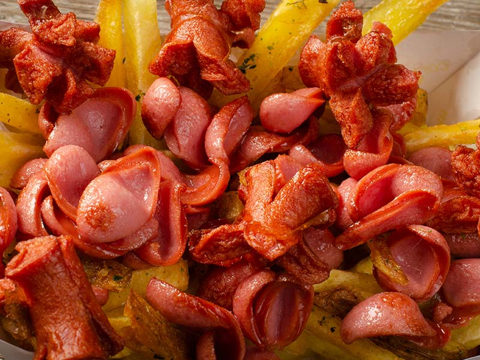

Salchipapa

Description
A typical dinner in Bolivia. Hope you enjoy it!
Ingredients
- 1 large Russet potato, peeled and cut in sticks
- oil, for frying
- salt
- 1 beef sausage (or, chicken or pork, it's up to you)
- ketchup
- mustard
- 2 ¼ cups water
- aji amarillo paste
- 1 egg
- mayonnaise
- parsley, chopped, for garnish
Steps
-
Fry the potatoes, in batches, in hot oil over high heat until golden,
then place them on a paper-lined plate and sprinkle with salt.
-
Slice the sausage into rounds or ovals, then stir-fry in a teaspoon of
oil until golden and crispy.
- Now, add the fries to the pan with the sausages.
-
Serve while still warm, with ketchup, mayonnaise, mustard, and aji
amarillo paste.